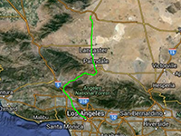

Search a route between two locations and draws the route.
Usage instructions:
Add this script to map GameObject.
Add this script to map GameObject.
FindDirectionExample.cs
/* INFINITY CODE 2013-2016 */
/* http://www.infinity-code.com */
using System.Collections.Generic;
using UnityEngine;
namespace InfinityCode.OnlineMapsExamples
{
[AddComponentMenu("Infinity Code/Online Maps/Examples (API Usage)/FindDirectionExample")]
public class FindDirectionExample : MonoBehaviour
{
private void Start()
{
// Begin to search a route from Los Angeles to the specified coordinates.
OnlineMapsGoogleAPIQuery query = OnlineMapsFindDirection.Find("Los Angeles",
new Vector2(-118.178960f, 35.063995f));
// Specifies that search results must be sent to OnFindDirectionComplete.
query.OnComplete += OnFindDirectionComplete;
}
private void OnFindDirectionComplete(string response)
{
// Get the route steps.
List<OnlineMapsDirectionStep> steps = OnlineMapsDirectionStep.TryParse(response);
if (steps != null)
{
// Showing the console instructions for each step.
foreach (OnlineMapsDirectionStep step in steps) Debug.Log(step.stringInstructions);
// Get all the points of the route.
List<Vector2> points = OnlineMapsDirectionStep.GetPoints(steps);
// Create a line, on the basis of points of the route.
OnlineMapsDrawingLine route = new OnlineMapsDrawingLine(points, Color.green);
// Draw the line route on the map.
OnlineMaps.instance.AddDrawingElement(route);
}
else
{
Debug.Log("Find direction failed");
}
}
}
}